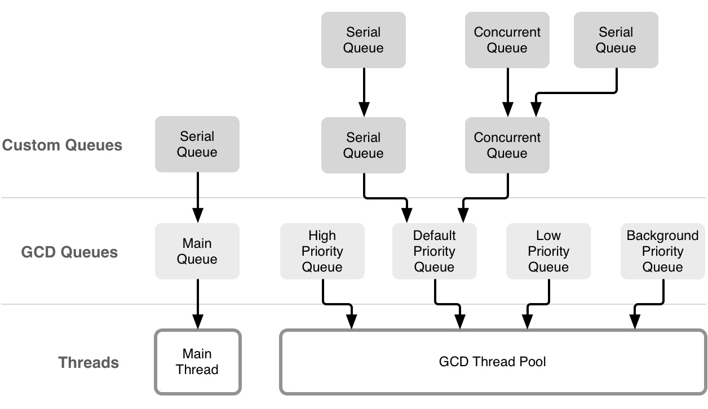

Introduction
操作系统
Mach O结构
编译原理
链接原理
静态代码分析
内存管理
内存管理
autorelease原理
dealloc实现原理
weak实现原理
多线程
GCD
NSOperation
线程锁分类
消息传递机制
Block原理
NSNotification原理
KVO原理
循环引用
循环引用种类
内存管理泄露追溯方案
Runtime
Class结构
Category实现原理
Runtime实际应用
Runloop
计时器实现原理
Runloop原理
Runloop应用
性能优化
启动时长
包体积优化
编译时长
Feed优化
算法相关
二叉树
链表
Published with GitBook
GCD
GCD 相关知识

results matching "
"
No results matching "
"